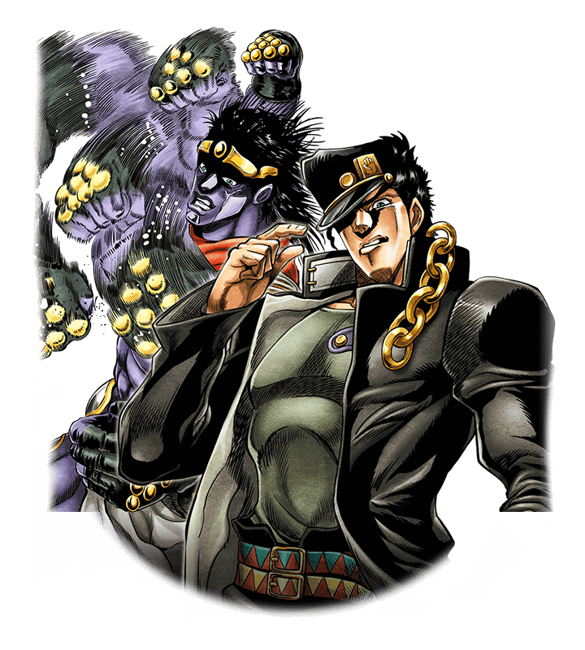

Abertura da Parte 3 Stardust Cruzaders - Stand Proud

Cante Também
Soshite tsudoishi stardust
Hyakunenn me no mezame ni yobarete
Otokotachi wa mukau
Toki no suna wo koeru journey
Kusari no you tsuranaru karami au
Karuma
Hikari e tatsu sadame
(Stand up! Stand up! Stand up!)
Uchikomu no wa
(All right now, all right now, all right now)
Hokori no bullet
Jojo! Jojo! Jojo!
(Break you down, break you down, break you down)
Kobushi hanatsu
Seinaru vision stand proud!
Informações Extras sobre a música
" Stand Proud " é uma música de Jin Hashimoto , com letras de Shoko Fujibayashi , composição de Takatuku Wakabayashi e arranjo (e guitarras) de ZENTA . É a primeira música tema de abertura de JoJo's Bizarre Adventure: Stardust Crusaders ; um single foi lançado em 23 de abril de 2014. Nos gráficos semanais de singles da Oricon , "Stand Proud" alcançou o número 13 depois de estar nas paradas por 2 semanas. Em Billboard ' s Japão Hot 100 , a canção estreou em 11. No Billboard ' outros gráficos s no Japão, a música também teve um bom desempenho: número 3 na Animação Hot e Álbuns Top Independent e gráficos Singles, e 2 nos gráficos Hot Singles Sales.
Abertura da Parte 3 Stardust Cruzaders - Sono Chi no kioku
Cante Também
(shiritai yo himeta monogatari
shakunetsu no sunao na mitate de
shukumei o mata yobisamase)
shuuchaku no chi o kogasu kamoku na honoo
obikiyose rareta kamigami no keshin
osore wo shiranu ken ga tsuranuku
mezasu basho to wa mada minu sadame
chikadzuite kuru kessen no toki
utsubeki piriodo wa star platinum
hajimatteshimatta monogatari ni ubawaretamama no toki ni
ima owari o tsugeru tame arukitsudzukeru cruzaders
kuuhaku no rasuto peeji ni sono kobushi o tatakikome
end of the world
sono chi no kioku
Informações Extras sobre a música
" JoJo Sono Chi no Kioku ~ fim do MUNDO ~ " ( fim do MUNDO lit, lit. "JoJo Memórias desse Sangue ~ fim do MUNDO ~") é a segunda abertura de Jojo's Bizarre Adventure: Stardust Crusaders e a quarta abertura geral do anime JoJo's Bizarre Adventure . Animada pelo Studio Kamikaze Douga , a música foi cantada por Hiroaki "TOMMY" Tominaga , Coda e Jin Hashimoto como JO ☆ STARS.
 JoJ
JoJ
 fag
O seu JoJosite
fag
O seu JoJosite